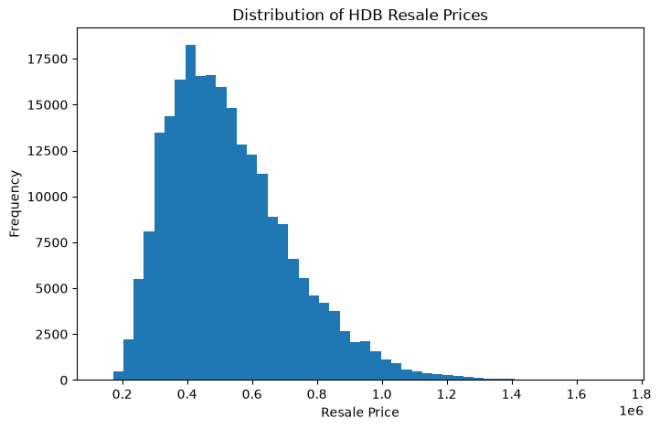
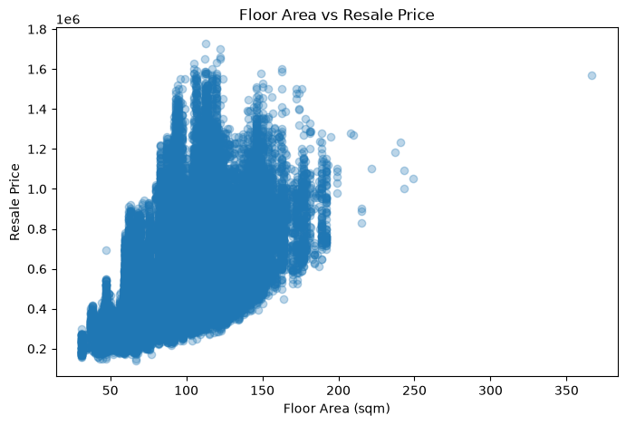
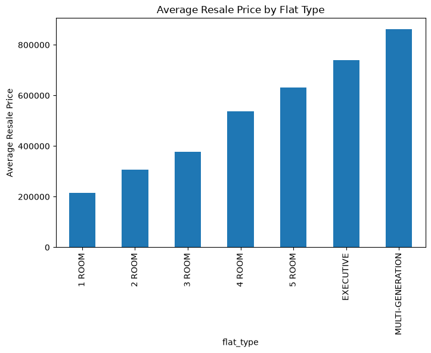
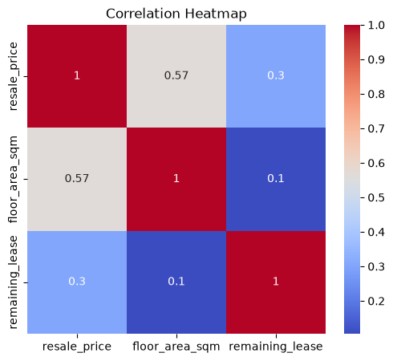
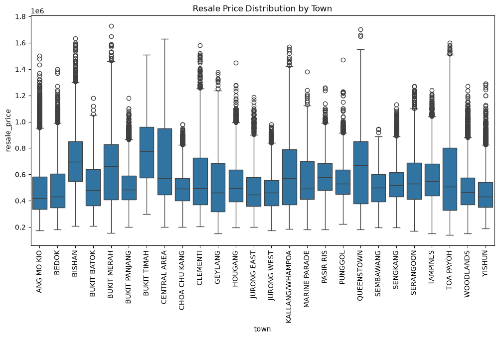
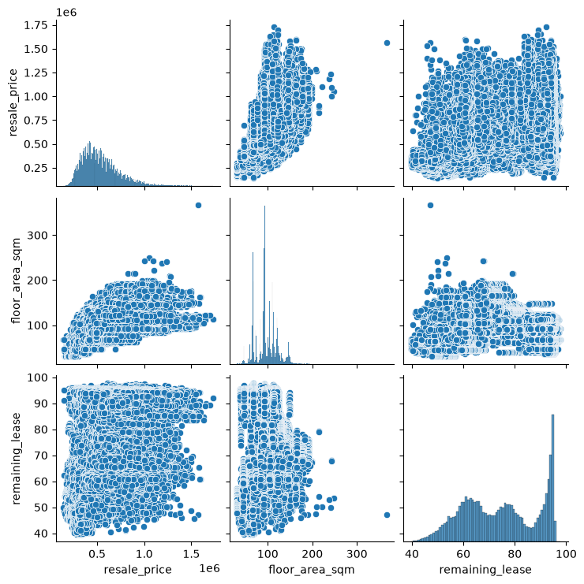

Python Refresh#
Python fundamentals revisited: data structures, comprehensions, functions.
Module-level functions vs. methods (applies to any library)#
Every library (pandas, numpy, etc.) splits its functionality into two kinds of callables — knowing which one you need tells you where to look for it.
Module-level functions — called as library.function(...), e.g. pd.read_csv(...), pd.DataFrame(...), np.array(...), pd.concat(...).
Used when the object you want doesn’t exist yet. There’s nothing to call a method on, so the library exposes a plain function to build one from scratch (a file path, a list, several existing objects being combined).
Methods — called as object.method(...), e.g. df.corr(), df.dropna(), df.groupby(), arr.sort().
Used when you already have an object (a DataFrame, Series, array, …) and want to act on the data already inside it. The method is attached to that object’s class, so it only exists once the object exists.
Rule of thumb: if the operation’s job is to produce an object in the first place, or combine several existing ones → library.function(). If the operation acts on an object you already have → object.method().
You’ll see this pattern everywhere: pd.read_csv() creates a DataFrame (module-level, no DataFrame exists yet) → then everything after, like df.head(), df.corr(), df.dropna(), is a method on that DataFrame (it already exists, you’re just asking it to do something with its own data).
import pandas as pd
import numpy as np
# --- CORRECT: module-level function to create something from scratch ---
df = pd.read_csv("ds-sprint-july/projects/projects1_hdb/ResaleflatpricesbasedonregistrationdatefromJan2017onwards.csv")
# No DataFrame existed yet — pd.read_csv() is the library-level function that builds one from a file path.
arr = np.array([1, 2, 3])
# No array existed yet — np.array() builds one from a plain Python list.
# --- CORRECT: method on an object that already exists ---
corr_matrix = df.corr(numeric_only=True)
# df already exists — .corr() is a method on THIS DataFrame, acting on its own columns.
sorted_arr = np.sort(arr)
# NOTE: sorting is actually a case where NumPy offers BOTH — np.sort(arr) (module-level, returns a new sorted array)
# and arr.sort() (method, sorts in place, returns None). Both are "correct", they just do different things.
# --- WRONG: calling a module-level function as if it were a method ---
# df.read_csv("some_file.csv")
# AttributeError: 'DataFrame' object has no attribute 'read_csv'
# read_csv's whole job is to CREATE a DataFrame — it doesn't make sense to call it "on" one that already exists.
# --- WRONG: calling a method as if it were a module-level function ---
# pd.corr(df)
# AttributeError: module 'pandas' has no attribute 'corr'
# corr() only exists as something a DataFrame does to itself (df.corr()) — pandas has no free-floating pd.corr().
# --- WRONG: forgetting an object needs to exist first ---
# pd.dropna(subset=["resale_price"])
# TypeError: dropna() missing 1 required positional argument: 'self'
# dropna is a DataFrame method — it needs a DataFrame to drop rows FROM. There's no "dropna in general", only "drop NaNs from this specific df".
# we can specify a value for sep to put some special string in between our printed arguments:
print(1, 2, 3, sep=' < ')
1 < 2 < 3
#
def greet(who="Colin"):
print("Hello,", who)
greet()
greet(who="Kaggle")
# (In this case, we don't need to specify the name of the argument, because it's unambiguous.)
greet("world")
Hello, Colin
Hello, Kaggle
Hello, world
NumPy#
NumPy library contains multidimensional array data structures.
import numpy as np
Creating an array#
Two- and higher-dimensional arrays can be initialized from nested Python sequences
# Put a square bracket outside the array.
a = np.array([[1, 2, 3], [4, 5, 6], [7, 8, 9]])
print(a)
[[1 2 3]
[4 5 6]
[7 8 9]]
Array attributes#
.ndim#
The number of dimensions of an array is contained in the ndim attribute.
.size#
The fixed, total number of elements in array is contained in the size attribute
print(a)
print("Number of dimensions:", a.ndim)
print("Shape:", a.shape)
[[1 2 3]
[4 5 6]
[7 8 9]]
Number of dimensions: 2
Shape: (3, 3)
Creating a basic array#
.zeros()#
create an array filled with 0’s
.ones()#
array filled with 1’s
.empty()#
creates an array whose initial content is random and depends on the state of the memory
.arrange()#
create an array with a range of elements from 0 to x, or
an array that contains a range of evenly spaced intervals. To do this, you will specify the first number, last number, and the step size.
.linspace#
create an array with values that are spaced linearly in a specified interval
np.empty vs np.zeros#
The function empty creates an array whose initial content is random and depends on the state of the memory. The reason to use empty over zeros (or something similar) is speed - just make sure to fill every element afterwards!
np.arrange vs np.linspace#
np.arange(start, stop, step) — you specify the step size, and it generates values until it hits (but doesn’t include) stop
np.linspace(start, stop, num) — you specify the number of elements, and NumPy figures out the step size to fit num evenly-spaced points between start and stop (inclusive by default).
Rule of thumb to internalize: ask yourself “do I care how many points I get, or do I care about the size of each step?” — count-driven → linspace; step-driven → arange.
# Create an empty array with 2 elements
a = np.empty(2)
print("np.empty(2): An empty array with 2 elements: \n", a) # may vary
# To create an array with 3 rows, 2 elements using .ones and .zeros, we can specify the shape as a tuple:
a = np.ones((3, 2))
print("np.ones((3, 2)): An array of ones with 3 rows and 2 columns:\n", a)
a = np.zeros((3, 2))
print("np.zeros((3, 2)): An array of zeros with 3 rows and 2 columns:\n", a)
# Using arrange for its two separate arguments, start and stop, we can create an array of evenly spaced values:
a = np.arange(3, 7)
print("np.arange(3, 7): An array of evenly spaced values from 3 to 7:\n", a)
a = np.arange(3, 7, 2)
print("np.arange(3, 7, 2): An array of evenly spaced values from 3 to 7 with a step of 2:\n", a)
# Using linspace, we can create an array of evenly spaced values over a specified interval:
a = np.linspace(3, 7, 2)
print("np.linspace(3, 7, 2): An array of 5 evenly spaced values from 3 to 7:\n", a)
np.empty(2): An empty array with 2 elements:
[inf inf]
np.ones((3, 2)): An array of ones with 3 rows and 2 columns:
[[1. 1.]
[1. 1.]
[1. 1.]]
np.zeros((3, 2)): An array of zeros with 3 rows and 2 columns:
[[0. 0.]
[0. 0.]
[0. 0.]]
np.arange(3, 7): An array of evenly spaced values from 3 to 7:
[3 4 5 6]
np.arange(3, 7, 2): An array of evenly spaced values from 3 to 7 with a step of 2:
[3 5]
np.linspace(3, 7, 2): An array of 5 evenly spaced values from 3 to 7:
[3. 7.]
Adding, removing, and sorting elements#
np.sort(a, axis=-1, kind=None, order=None, *, stable=None, descending=)#
Sorting an array is simple with np.sort(). You can specify the axis, kind, and order when you call the function.
a: array_like
Array to be sorted.
axis: int or None, optional
Axis along which to sort. If None, the array is flattened before sorting. The default is -1, which sorts along the last axis.
Ignore for now: kind, order, stable. These are for edge cases (structured arrays, guaranteeing tie-order) you won’t hit in tabular EDA work. Default behavior is fine.
np.argsort(a, axis=-1, kind=None, order=None)#
Returns the indices that would sort the array, not the sorted values. axis — same logic as sort. Default -1 sorts indices along the last axis (each row independently for 2D). axis=0 would give you, for each column, the row-order that sorts that column.
np.concatenate()#
To concatenate two arrays.
a = np.array([[3, 1, 2],
[9, 7, 8]])
np.sort(a, axis=-1) # sorts each row
# [[1, 2, 3],
# [7, 8, 9]]
np.sort(a, axis=0) # sorts each column
# [[3, 1, 2],
# [9, 7, 8]] -> becomes column-wise sorted
np.sort(a, axis=None) # flattens everything first, one sorted 1D array
array([1, 2, 3, 7, 8, 9])
a = np.array([[1, 2],
[3, 4]])
b = np.array([[5, 6],
[7, 8]])
print("Array a:\n", a)
print("Array b:\n", b)
np.concatenate((a, b), axis=0)
# [[1, 2],
# [3, 4],
# [5, 6],
# [7, 8]] -> more rows added
print("Concatenating along axis 0:\n", np.concatenate((a, b), axis=0))
np.concatenate((a, b), axis=1)
# [[1, 2, 5, 6],
# [3, 4, 7, 8]] -> more columns added
print("Concatenating along axis 1:\n", np.concatenate((a, b), axis=1))
Array a:
[[1 2]
[3 4]]
Array b:
[[5 6]
[7 8]]
Concatenating along axis 0:
[[1 2]
[3 4]
[5 6]
[7 8]]
Concatenating along axis 1:
[[1 2 5 6]
[3 4 7 8]]
Pandas#
The most popular Python library for data analysis.
import pandas as pd
DataFrame#
A table. It contains an array of individual entries, each of which has a certain value, Each entry corresponds to a row and a column.
a = pd.DataFrame([[1, 2], [3, 4]], columns=['A', 'B'])
print("DataFrame a:\n", a, ".\nConstructed from a list of lists (row-oriented). Each inner list is one row; columns= labels them separately. This is how you build a DataFrame when your data naturally comes as records — one row per observation, many columns of mixed types.")
b = pd.DataFrame({'Yes': [50, 21], 'No': [131, 2]})
print("DataFrame b:\n", b, "\nConstructed from a dict of lists (column-oriented). Each key becomes a column, and the dict values are that column's data down all rows. This suits data that's already aggregated by category — e.g. a small summary table.")
DataFrame a:
A B
0 1 2
1 3 4 .
Constructed from a list of lists (row-oriented). Each inner list is one row; columns= labels them separately. This is how you build a DataFrame when your data naturally comes as records — one row per observation, many columns of mixed types.
DataFrame b:
Yes No
0 50 131
1 21 2
Constructed from a dict of lists (column-oriented). Each key becomes a column, and the dict values are that column's data down all rows. This suits data that's already aggregated by category — e.g. a small summary table.
DataFrame with Index#
The dictionary-list constructor assigns values to the column labels, but just uses an ascending count from 0 (0, 1, 2, 3, …) for the row labels. Sometimes this is OK, but oftentimes we will want to assign these labels ourselves.
The list of row labels used in a DataFrame is known as an Index. We can assign values to it by using an index parameter in our constructor
pd.DataFrame({'Bob': ['I liked it.', 'It was awful.'],
'Sue': ['Pretty good.', 'Bland.']},
index=['Product A', 'Product B'])
print("DataFrame constructed from a dict of dicts:\n", pd.DataFrame({'Bob': {'Product A': 'I liked it.', 'Product B': 'It was awful.'},
'Sue': {'Product A': 'Pretty good.', 'Product B': 'Bland.'}}), "\n\nThis is a dict of dicts. The outer dict keys are the column labels, and the inner dict keys are the row labels. This is a convenient way to construct a DataFrame when you have a small amount of data that you want to enter manually, and you want to specify both the row and column labels.")
pd.DataFrame([[1,2,3], [4,5,6]],
index=['cobra', 'viper'],
columns=['max_speed', 'shield', 'armor'])
print("\nDataFrame constructed from a list of lists with specified index and columns:\n", pd.DataFrame([[1,2,3], [4,5,6]], index=['cobra', 'viper'], columns=['max_speed', 'shield', 'armor']), "\n\nThis is a list of lists. The outer list contains the rows, and the inner lists contain the values for each column. The index parameter specifies the row labels, and the columns parameter specifies the column labels. This is a convenient way to construct a DataFrame when you have a small amount of data that you want to enter manually, and you want to specify both the row and column labels.")
DataFrame constructed from a dict of dicts:
Bob Sue
Product A I liked it. Pretty good.
Product B It was awful. Bland.
This is a dict of dicts. The outer dict keys are the column labels, and the inner dict keys are the row labels. This is a convenient way to construct a DataFrame when you have a small amount of data that you want to enter manually, and you want to specify both the row and column labels.
DataFrame constructed from a list of lists with specified index and columns:
max_speed shield armor
cobra 1 2 3
viper 4 5 6
This is a list of lists. The outer list contains the rows, and the inner lists contain the values for each column. The index parameter specifies the row labels, and the columns parameter specifies the column labels. This is a convenient way to construct a DataFrame when you have a small amount of data that you want to enter manually, and you want to specify both the row and column labels.
Series#
A Series, by contrast, is a sequence of data values. If a DataFrame is a table, a Series is a list.
A Series is, in essence, a single column of a DataFrame. So you can assign row labels to the Series the same way as before, using an index parameter.
However, a Series does not have a column name
a = pd.Series([30, 35, 40], index=['2015 Sales', '2016 Sales', '2017 Sales'])
print("Series a:\n", a, "\n\nThis is a Series. The first argument is the data, the second argument is the index (row labels), and the name parameter specifies the name of the Series. This is a convenient way to construct a Series when you have a small amount of data that you want to enter manually, and you want to specify both the index and the name of the Series.")
Series a:
2015 Sales 30
2016 Sales 35
2017 Sales 40
dtype: int64
This is a Series. The first argument is the data, the second argument is the index (row labels), and the name parameter specifies the name of the Series. This is a convenient way to construct a Series when you have a small amount of data that you want to enter manually, and you want to specify both the index and the name of the Series.
Reading Data Files#
pd.read_csv() function to read the data into a DataFrame
resale = pd.read_csv('ds-sprint-july/projects/projects1_hdb/ResaleflatpricesbasedonregistrationdatefromJan2017onwards.csv')
df = resale
Cleaning remaining_lease#
The raw column is a string like "61 years 04 months" — not usable for math, plotting, or correlation as-is. We convert it to a single numeric value (years, as a float) so it behaves like floor_area_sqm or resale_price.
.str.extract(pattern)
Runs a regex against every value in a string Series and pulls out the parts captured in
(...)groups, returning a DataFrame — one column per group.Pattern used:
r"(\d+)\s*years?(?:\s*(\d+)\s*months?)?"(\d+)\s*years?— group 1: one or more digits followed by “year” or “years” (thes?makes the trailingsoptional).(?:\s*(\d+)\s*months?)?— an optional, non-capturing block(?:...)?for the months part. Inside it, group 2 captures the digits before “month”/”months”. Optional because some entries are just"61 years"with no month component.Result:
lease_parts[0]= years captured,lease_parts[1]= months captured (orNaNif absent).
Why convert to years + months / 12
We need one continuous number, not two separate strings, so we can plot it, correlate it with
resale_price, or feed it into a model.Months are a fraction of a year, so dividing by 12 puts them on the same scale as
yearsbefore adding — e.g. “61 years 4 months” →61 + 4/12 ≈ 61.33..fillna(0)on months handles rows with no month part (so we don’t lose the year value toNaNduring addition).
# remaining_lease comes in as "61 years 04 months" — convert to numeric years
lease_parts = df["remaining_lease"].str.extract(r"(\d+)\s*years?(?:\s*(\d+)\s*months?)?")
years = lease_parts[0].astype(float)
months = lease_parts[1].astype(float).fillna(0)
df["remaining_lease"] = years + months / 12
HDB Resale EDA Cheatsheet — Pandas, Matplotlib, Seaborn#
import matplotlib.pyplot as plt
import seaborn as sns
PANDAS#
Load & Inspect#
Get a first look at structure, types, and size before doing anything else — this tells you what you’re working with (column names/types, obvious missing data, row count) so later steps don’t break on surprises.
df.info() # Prints column names, dtypes, non-null counts, and memory usage — fastest way to spot missing data and wrong types (e.g. a numeric column stored as object/string).
df.describe() # Summary stats (count, mean, std, min, 25/50/75th percentiles, max) for every numeric column — a quick sense of scale, spread, and possible outliers.
df.head() # Prints the first 5 rows (pass an int, e.g. df.head(10), to change how many) — lets you eyeball the actual values and column layout.
print(df.shape) # (n_rows, n_columns) tuple — how big the dataset is.
<class 'pandas.DataFrame'>
RangeIndex: 234672 entries, 0 to 234671
Data columns (total 11 columns):
# Column Non-Null Count Dtype
--- ------ -------------- -----
0 month 234672 non-null str
1 town 234672 non-null str
2 flat_type 234672 non-null str
3 block 234672 non-null str
4 street_name 234672 non-null str
5 storey_range 234672 non-null str
6 floor_area_sqm 234672 non-null float64
7 flat_model 234672 non-null str
8 lease_commence_date 234672 non-null int64
9 remaining_lease 234672 non-null float64
10 resale_price 234672 non-null float64
dtypes: float64(3), int64(1), str(7)
memory usage: 19.7 MB
(234672, 11)
Missing Data#
Check for gaps in key fields (resale price, floor area, lease remaining) and handle them.
Why this matters: missing values silently break math (NaN propagates through sums/means), plotting (points get dropped), and correlation (rows with any NaN are excluded, shrinking your effective sample). For each column, decide whether to drop the row or fill (“impute”) the gap — dropping loses data, filling assumes the missing value looks like the rest of the column.
print(df.isna().sum())
# .isna() returns a same-shaped DataFrame of True/False (True = missing).
# .sum() adds down each column (True counts as 1, False as 0), giving the count of missing values per column.
df_clean = df.dropna(subset=["resale_price", "floor_area_sqm"])
# .dropna() removes any row that contains a NaN.
# subset=[...] restricts the check to just these columns — a NaN in some *other* column won't cause the row to be dropped.
# Without subset, dropna() checks every column, which is usually too aggressive (one stray NaN anywhere wipes the row).
# Use this for columns you can't sensibly guess a value for — dropping the row is safer than inventing a resale price.
df_clean["remaining_lease"] = df_clean["remaining_lease"].fillna(df_clean["remaining_lease"].median())
# .fillna(value) replaces every NaN in the column with `value`.
# Here `value` is the column's own median — a common default for numeric columns because, unlike the mean, the median isn't pulled around by outliers.
# Use fillna (impute) instead of dropna when you don't want to lose an entire row just because one column is missing.
month 0
town 0
flat_type 0
block 0
street_name 0
storey_range 0
floor_area_sqm 0
flat_model 0
lease_commence_date 0
remaining_lease 0
resale_price 0
dtype: int64
Filtering / Selection#
Narrow the dataset by town, flat type, or year range using .loc and boolean masks.
How .loc + boolean masks work: df["col"] == value produces a Series of True/False, one per row (a “mask”). df.loc[mask] keeps only the rows where the mask is True. Combine conditions with & (and) / | (or) — each individual condition must be wrapped in parentheses, because &/| bind tighter than ==/>= in Python and the expression would otherwise parse incorrectly.
df_tampines = df.loc[df["town"] == "TAMPINES"]
# Keep only rows where the "town" column equals "TAMPINES".
df_recent = df.loc[(df["month"] >= "2023-01") & (df["month"] <= "2024-12")]
# Two conditions combined with & (row kept only if BOTH are True). Parentheses around each condition are required.
# This works because "month" is stored as a "YYYY-MM" string — string comparison sorts lexicographically, which happens to match chronological order for this fixed-width format.
df_4room = df.loc[df["flat_type"] == "4 ROOM"]
# Keep only 4-room flat rows.
Aggregation#
Summarize resale price by town, flat type, and year to spot patterns.
Concept: aggregation collapses many rows into one summary value per group (e.g. “average price per town”). This is how you go from 100k+ individual transactions down to a handful of numbers you can actually compare.
avg_price_by_town = df.groupby("town")["resale_price"].mean().sort_values(ascending=False)
# .groupby("town") splits the DataFrame into one group per unique town value.
# ["resale_price"] selects that column within each group.
# .mean() computes the average resale_price per group, returning a Series indexed by town.
# .sort_values(ascending=False) orders the result from highest to lowest average price.
avg_price_by_flat_type = df.groupby("flat_type")["resale_price"].agg(["mean", "median", "count"])
# .agg([...]) computes several summary statistics per group at once, returning a DataFrame with one column per stat (instead of calling .mean(), .median(), .count() separately).
# "count" matters alongside mean/median as a sanity check — a mean computed from 5 rows is far less trustworthy than one computed from 5,000.
price_pivot = df.pivot_table(values="resale_price", index="town", columns="flat_type", aggfunc="mean")
# .pivot_table() reshapes long data into a wide grid: one row per `index` value (town), one column per `columns` value (flat_type),
# with each cell holding `aggfunc` ("mean" here) applied to `values` (resale_price) for that town + flat_type combination.
# Useful for spotting patterns across two categorical dimensions at once — e.g. "is 4-room always pricier than 3-room, in every town?"
Correlation#
Check numeric relationships — floor area, lease remaining, storey range vs resale price.
What a correlation matrix is: a table showing the pairwise correlation coefficient between every pair of numeric columns. Each coefficient ranges from -1 to +1:
+1 — perfect positive relationship: as one variable increases, the other increases proportionally.
0 — no linear relationship: knowing one variable tells you nothing (linearly) about the other.
-1 — perfect negative relationship: as one increases, the other decreases proportionally.
Values in between (e.g. 0.7, -0.3) indicate the strength and direction of a linear trend — the closer to ±1, the stronger.
How to read the matrix:
The diagonal is always 1.0 (a variable is perfectly correlated with itself).
The matrix is symmetric — corr(A, B) == corr(B, A) — so you only need to read one triangle (above or below the diagonal).
Rough rule of thumb: |r| < 0.3 weak, 0.3–0.7 moderate, > 0.7 strong (not a fixed law — depends on the domain).
Caveat: correlation measures linear relationships only and does not imply causation. Two variables can be correlated because a third factor drives both, and a strong non-linear relationship (e.g. U-shaped) can still show a near-zero correlation despite being clearly related — always sanity-check with a scatter plot.
numeric_cols = ["resale_price", "floor_area_sqm", "remaining_lease"]
corr_matrix = df[numeric_cols].corr()
# .corr() computes the Pearson correlation coefficient (the default `method`) between every pair of columns, returning a square matrix.
# It only makes sense on numeric columns — pre-selecting numeric_cols avoids errors/unwanted behavior from passing non-numeric (e.g. string) columns.
print(corr_matrix)
resale_price floor_area_sqm remaining_lease
resale_price 1.000000 0.565247 0.301489
floor_area_sqm 0.565247 1.000000 0.104818
remaining_lease 0.301489 0.104818 1.000000
Combining Data (only if using multiple data.gov.sg tables)#
Merge in additional context like MRT proximity if using a second dataset. (Skipped for now — no second dataset loaded; mrt_distance_df is not defined.)
df_merged = df.merge(mrt_distance_df, on="town", how="left")
Parameters:
on="town"— the column present in both DataFrames used to match rows (must exist with matching values/name in both; useleft_on=/right_on=instead if the column names differ between the two DataFrames).how="left"— keep every row fromdf(the “left” DataFrame), attaching matching data frommrt_distance_dfwhere a match exists and filling withNaNwhere it doesn’t. Other options:"inner"(only rows that match in both),"right"(keep all rows from the right DataFrame instead),"outer"(keep all rows from both, filling gaps withNaNeither side).
MATPLOTLIB#
Distribution#
See how resale prices are spread out overall.
What a histogram tells you: it buckets a numeric column into equal-width ranges (“bins”) and plots the count of values falling in each bin as a bar. This reveals the shape of the distribution — where values cluster, whether it’s symmetric or skewed (a long tail to one side), whether there are multiple peaks (multimodal), and roughly where outliers sit.
When to use it: whenever you want to understand a single numeric column’s spread before deeper analysis — e.g. is resale_price roughly bell-shaped, or skewed toward cheaper flats with a long tail of expensive outliers? This shapes later decisions like whether to log-transform the variable.
plt.figure(figsize=(8, 5))
# Creates a new blank figure canvas; figsize=(width, height) in inches controls the plot's overall size.
plt.hist(df["resale_price"], bins=50)
# bins=50 splits the value range into 50 equal-width buckets. More bins = finer detail but noisier; fewer bins = smoother but may hide real structure. 50 is a reasonable default for a dataset with tens of thousands of rows.
plt.xlabel("Resale Price")
plt.ylabel("Frequency")
plt.title("Distribution of HDB Resale Prices")
plt.show()
# Renders the figure. Harmless to omit in Jupyter (the last expression auto-displays), but good habit for portability to plain scripts.

Relationship#
Check how floor area relates to resale price.
What a scatter plot tells you: each point is one row, positioned by its value on the x-axis and y-axis variables. It reveals whether two numeric variables move together (a visible upward/downward trend = correlation), the shape of that relationship (straight line vs curve), and outliers that don’t fit the pattern. It’s the visual counterpart to a correlation coefficient — the number in corr_matrix is a single-value summary of what you’re looking at here.
When to use it: whenever you want to inspect the relationship between exactly two numeric variables, especially before trusting a correlation number — correlation can mislead if the true relationship is non-linear or dominated by a handful of outliers, and a scatter plot lets you check that visually.
plt.figure(figsize=(8, 5))
plt.scatter(df["floor_area_sqm"], df["resale_price"], alpha=0.3)
# alpha=0.3 sets point transparency (0 = invisible, 1 = fully opaque). With tens of thousands of overlapping points, a low alpha lets you see density — darker regions are where more points stack on top of each other — instead of one solid blob.
plt.xlabel("Floor Area (sqm)")
plt.ylabel("Resale Price")
plt.title("Floor Area vs Resale Price")
plt.show()

Comparison#
Compare average price across flat types.
What a bar chart tells you: it compares a single summary value (here, average price) across discrete categories (flat types). Unlike a histogram, which shows the distribution of one continuous variable, a bar chart shows one number per category — use it once you’ve already aggregated (e.g. via .groupby()), not on raw row-level data.
avg_price_by_flat_type["mean"].plot(kind="bar", figsize=(8, 5))
# .plot(kind="bar") is a pandas convenience wrapper around matplotlib — plots each row's value as a bar, using the Series' index (flat_type) as the x-axis labels.
# ["mean"] selects just the mean column from the earlier .agg(["mean", "median", "count"]) result, since we only want to plot this one stat.
plt.ylabel("Average Resale Price")
plt.title("Average Resale Price by Flat Type")
plt.show()

SEABORN#
Heatmap#
Visualize the correlation matrix — same logic you’ll reuse on SECOM’s 591 features later.
What a heatmap adds over the raw numbers: it colors each cell by value, so patterns across a large matrix (e.g. hundreds of features later on) jump out visually — strong correlations (near ±1) stand out as vivid colors, weak ones (near 0) fade to a neutral/light color — without having to scan every individual number in the table.
plt.figure(figsize=(6, 5))
sns.heatmap(corr_matrix, annot=True, cmap="coolwarm")
# annot=True prints the actual correlation value inside each cell on top of the color — useful for small matrices where exact values matter; set annot=False for very large matrices where the text would overlap and become unreadable.
# cmap="coolwarm" sets the color scale: blue for negative correlations, red for positive, and a neutral/white tone near 0 — makes direction (not just strength) visible at a glance.
plt.title("Correlation Heatmap")
plt.show()

Boxplot#
Compare price distribution across towns to spot spread and outliers.
How to read a boxplot:
The box spans the interquartile range (IQR) — from the 25th percentile (bottom edge) to the 75th percentile (top edge) — so it contains the middle 50% of the data.
The line inside the box is the median (50th percentile).
The whiskers extend to the smallest/largest values still within 1.5×IQR of the box edges.
Points plotted beyond the whiskers are individual outliers.
When to use it: to compare the spread, central tendency, and outliers of a numeric variable across several categories at once (here, resale_price per town) — more compact than overlaying multiple histograms, though it hides finer distribution shape (e.g. multiple peaks) that a histogram would reveal.
plt.figure(figsize=(12, 6))
sns.boxplot(data=df, x="town", y="resale_price")
# Passing data=df with x/y column names (rather than raw arrays) lets seaborn automatically group resale_price by each unique value of town and draw one box per group.
plt.xticks(rotation=90)
# Rotates x-axis tick labels 90° — town names would otherwise overlap and be unreadable with this many categories.
plt.title("Resale Price Distribution by Town")
plt.show()

Pairplot#
Look at pairwise relationships across key numeric features at once.
What a pairplot shows: a grid of scatter plots for every pair of the given numeric columns, plus a histogram (or density curve) on the diagonal for each column’s own distribution. It’s a fast way to eyeball every pairwise relationship and every individual distribution in one image, instead of building each scatter plot and histogram separately by hand — most useful early in EDA, or later with SECOM’s many features (in smaller batches, since an N×N grid gets unwieldy fast as N grows).
sns.pairplot(df[["resale_price", "floor_area_sqm", "remaining_lease"]])
# Pass a DataFrame containing only the columns you want plotted — pairplot uses every numeric column it's given, so subsetting first (rather than passing the full df) keeps the grid readable and fast.
plt.show()
